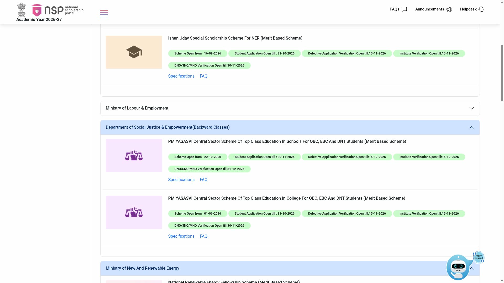
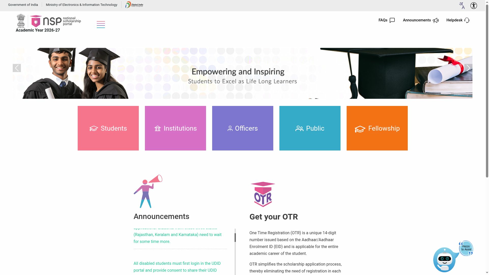

PM YASASVI School Scholarship 2026-27: up to Rs 1,25,000 a year, apply by 30 November
Fresh applications for the PM YASASVI Central Sector Scheme of Top Class Education in Schools for OBC, EBC and DNT students opened on the National Scholarship Portal (NSP) on Thursday, 22 October 2026, and close on Monday, 30 November 2026. Under the scheme's standing official guidelines, it pays school and hostel fees on an actual basis: up to Rs 75,000 a year for students in Classes 9 and 10, and up to Rs 1,25,000 a year for Classes 11 and 12 (see the source note under Who can apply). Students from Keralam, Rajasthan and Karnataka cannot apply yet - NSP says they need to wait for some time more.
Who can apply
The eligibility and award rules in this section are from the scheme's published official documents: the PM-YASASVI master guidelines (2021-22 to 2025-26) and the operational notice from the Department of Social Justice and Empowerment. NSP's live 2026-27 listing confirms the scheme's continuation and the application window above, but no 2026-27 revision of these guidelines has been published on the ministry site or NSP as of 23 October 2026 - treat the detailed criteria below as the scheme's standing terms, not freshly confirmed 2026-27 text:
- Students belonging to the OBC, EBC or DNT categories.
- Parents' or guardians' annual income below the Rs 2,50,000 ceiling: the master guidelines say "less than Rs 2.5 lakh" while the ministry's operational notice describes a Rs 2,50,000 limit - if your income is exactly Rs 2,50,000, confirm the cutoff on the current NSP application form or helpline.
- Studying in Class 9 or Class 11 in a school identified as a Top Class School under the scheme. States and UTs identify these schools, and the eligible schools are listed in the NSP application.
- At least 60% marks in Class 8 (to apply while in Class 9) or in Class 10 (to apply while in Class 11).
Amount and how it is paid
- Up to Rs 75,000 per year for Classes 9 and 10, and up to Rs 1,25,000 per year for Classes 11 and 12. The assistance covers school and hostel fees on an actual basis, so the final amount depends on the real fees.
- Selection is by merit prepared on the marks obtained in Class 8 or Class 10, through the NSP portal. The official notice lists no separate entrance test for this route.
- The scholarship is paid by Direct Benefit Transfer (DBT) to the student's Aadhaar-seeded bank account by the central government.
Key dates
- Fresh applications opened: 22 October 2026.
- Student applications close: 30 November 2026.
- Institute verification open till 15 December 2026; district, state and ministry verification open till 31 December 2026.

Kerala, Rajasthan and Karnataka students
The NSP announcement, checked 23 October 2026, says the scheme is open for fresh applications but students from Keralam, Rajasthan and Karnataka cannot submit yet and "need to wait for some time more". The application window runs till 30 November 2026, so there is time for these states to open. Meanwhile: ask your school whether it is identified as a Top Class School under this scheme, keep the Class 8 or Class 10 marksheet, Aadhaar, income certificate and community certificate ready, and watch the NSP scheme page for your state to open.
How to apply on NSP: step by step
NSP uses One Time Registration (OTR) - do this first if you have never registered. Registration on NSP is free.
- Open scholarships.gov.in (Academic Year 2026-27 is live), click Students → Apply now, then Register.
- Read the OTR guidelines, tick the consent boxes and click Next. Register your active mobile number and verify it with the OTP; a reference number is sent to your mobile.
- Complete eKYC: install the NSP OTR app and the Aadhaar Face RD app on an Android phone and do face authentication with the reference number. Your 14-digit OTR ID is then generated. Aadhaar is required; a minor without Aadhaar can register with a parent's or legal guardian's Aadhaar.
- Log in on NSP with your OTR ID, open Fresh Application for Academic Year 2026-27 and choose "PM YASASVI Central Sector Scheme of Top Class Education in Schools for OBC, EBC and DNT Students" from the scheme list. If you are from Keralam, Rajasthan or Karnataka, the scheme may not accept your application until your state opens.
- Fill the application form and upload the documents it lists, typically the Class 8 or Class 10 marksheet, income certificate, community certificate, Aadhaar and bank account details.
- Submit by 30 November 2026. Track the application in the same dashboard; institute verification runs till 15 December 2026 and district, state and ministry verification till 31 December 2026.

Steps 4-6 happen inside your own NSP login, so they are not shown as screenshots. Generating an OTR alone is not an application - you must still log in and submit the scholarship application. NSP services are also available at Common Service Centres (CSCs); the NSP announcement fixes the assisted-service charge at Rs 30 per candidate.
From AY 2026-27, a student may apply for one merit-based scholarship scheme and one or more welfare-based schemes on NSP, as per scheme eligibility criteria. This YASASVI school scheme is merit-based.
Video guides
We searched on 23 October 2026 for a step-by-step application video for this school scheme on the current NSP OTR portal in English and in Malayalam. The videos we found cover the YASASVI college scheme or older cycles and could not be verified to match the application window that opened 22 October 2026, so we are not linking any rather than risk outdated or unrelated instructions.
Help and contact
NSP helpdesk links are on the portal's Helpdesk page. Scheme queries can also be raised through the grievance registration option on NSP.
Sources: NSP scheme list with live application dates · NSP announcements (state-wise application status) · PM-YASASVI master guidelines 2021-22 to 2025-26 (DoSJE) · Official scheme notice PDF, Department of Social Justice and Empowerment · PM-YASASVI scheme page, Ministry of Social Justice and Empowerment. Checked 23 October 2026. Explainer by AiCoN - not a government publication. Details can change; check scholarships.gov.in before you apply.